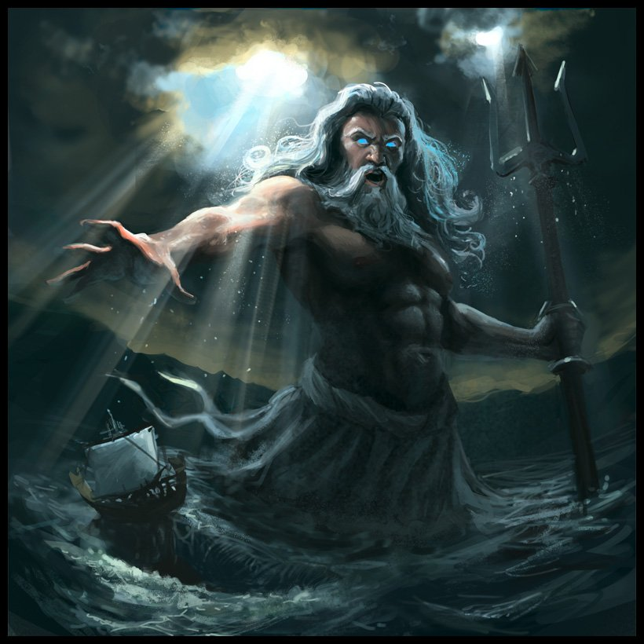

Посейдо́н (др.-греч. Ποσειδῶν) — в древнегреческой мифологии верховный морской бог, один из трёх главных богов-олимпийцев вместе с Зевсом и Аидом. Сын титана Кроноса и Реи, брат Зевса, Аида, Геры, Деметры и Гестии (Hes. Theog.). При разделении мира после победы над титанами Посейдону досталась водная стихия (Hom. Il.). Постепенно он оттеснил древних местных богов моря: Нерея, Океана, Протея и других.
